GHE 2013 - The Adventure Pilgrimage
Day 0
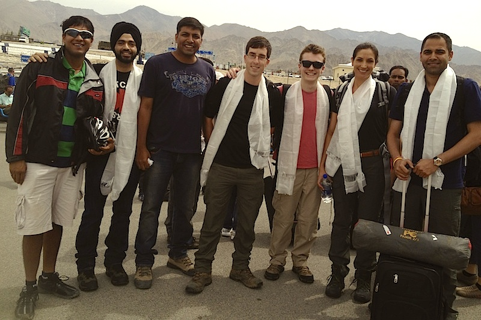
We arrive in Leh, a team of 25 participants from 8 countries, and are welcomed by the expedition leaders with the traditional Ladakhi silk scarf “Khatak”. Acclimatizing to the altitude, we take rest in the comfortable Mongolian huts, and venture out to the city market in evening for a casual tour.
Day 0
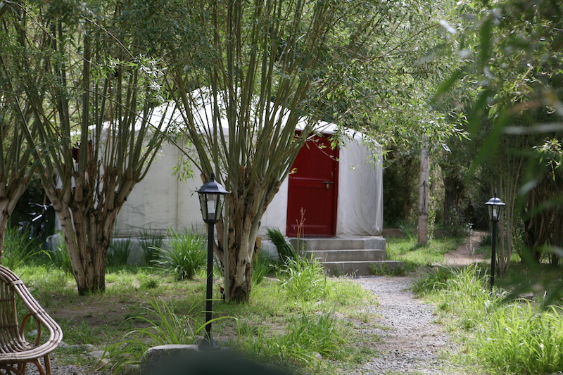
We arrive in Leh, a team of 25 participants from 8 countries, and are welcomed by the expedition leaders with the traditional Ladakhi silk scarf “Khatak”. Acclimatizing to the altitude, we take rest in the comfortable Mongolian huts, and venture out to the city market in evening for a casual tour.
Day 1
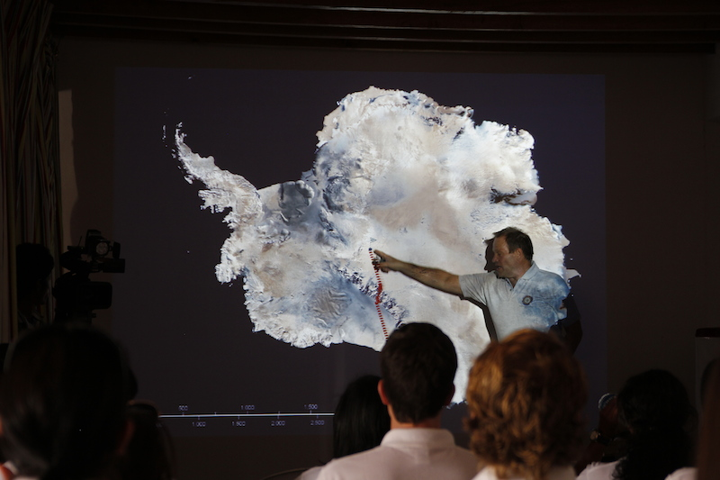Robert Swan greets the participants and dazzles us with an inspiring account of his journey to the two poles while also elaborating upon the concept of the E-Bases. We then proceed to add final touches to the E-Base. In the evening we all attend an amazing cultural song-dance presentation by the children of Mahabodhi School.
Day 1
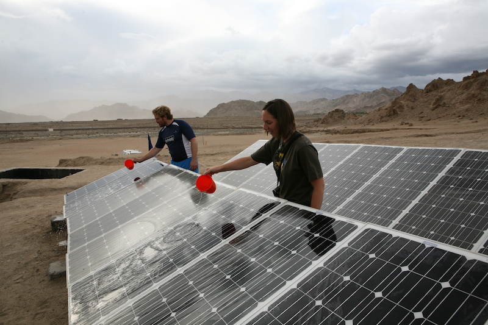Robert Swan greets the participants and dazzles us with an inspiring account of his journey to the two poles while also elaborating upon the concept of the E-Bases. We then proceed to add final touches to the E-Base. In the evening we all attend an amazing cultural song-dance presentation by the children of Mahabodhi School.
Day 2
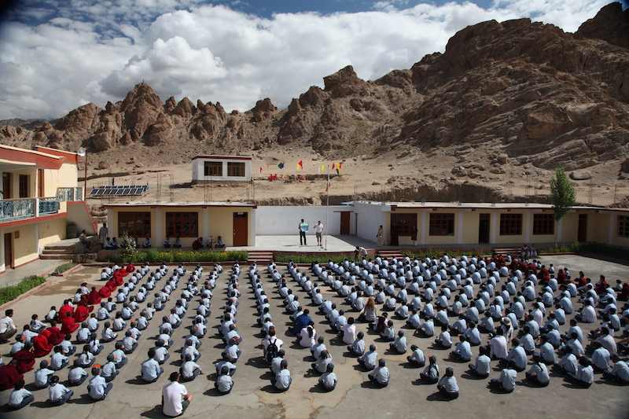We have a refreshing start to the day with an early morning meditation session. We then attend the morning assembly of the Mahabodhi School and proceed on to the inauguration of the E-Base by Guruji, in the presence of Rob and the children. We all then have a session of brainstorming about how to effectively utilize the E-Base
Day 2
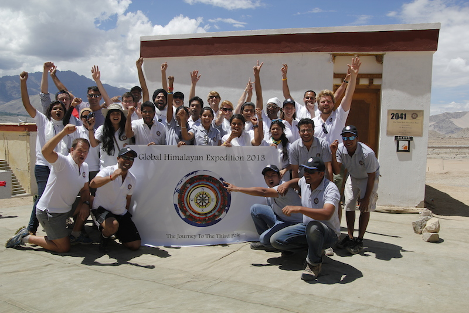We have a refreshing start to the day with an early morning meditation session. We then attend the morning assembly of the Mahabodhi School and proceed on to the inauguration of the E-Base by Guruji, in the presence of Rob and the children. We all then have a session of brainstorming about how to effectively utilize the E-Base
Day 3
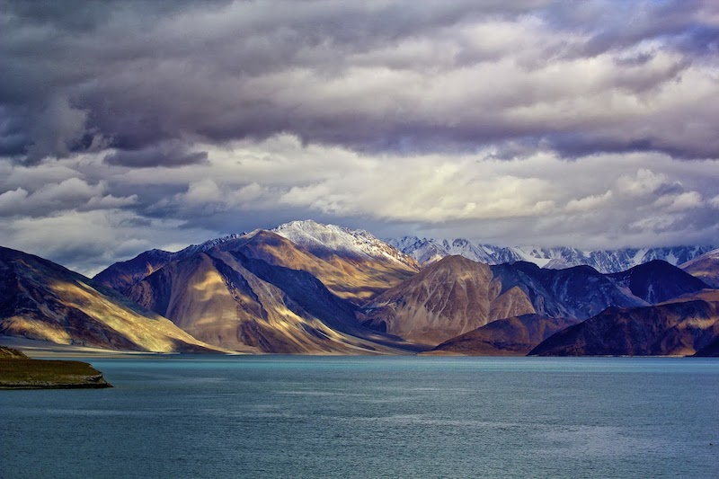We had heard a lot about the beauty and serenity of the Pangong Tso lake, and when we did arrive at the lake on the third day, we understood how terribly short the descriptions had fallen of the real thing. We camped the night by the lake-side, observing the clear night sky devoid of any light pollution, and seeing stars there which we never knew existed.
Day 3
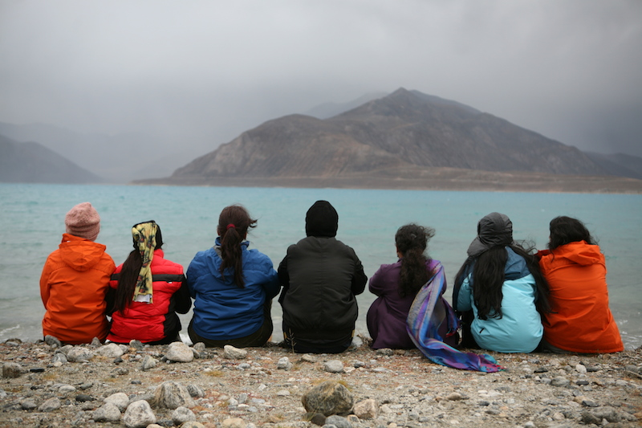We had heard a lot about the beauty and serenity of the Pangong Tso lake, and when we did arrive at the lake on the third day, we understood how terribly short the descriptions had fallen of the real thing. We camped the night by the lake-side, observing the clear night sky devoid of any light pollution, and seeing stars there which we never knew existed.
Day 4
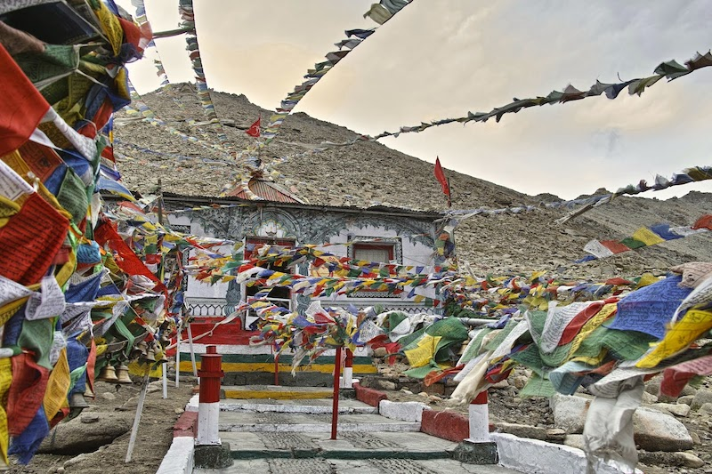After spending the morning by the lake-side, we headed back to Leh, through snaking roads, passing through some of the world’s highest motorable passes, and scenic valleys. We stopped by at the Hemis monastery on the way, where we got a glimpse into Ladakh’s rich history and religious traditions, and also a chance to interact with the monks.
Day 4
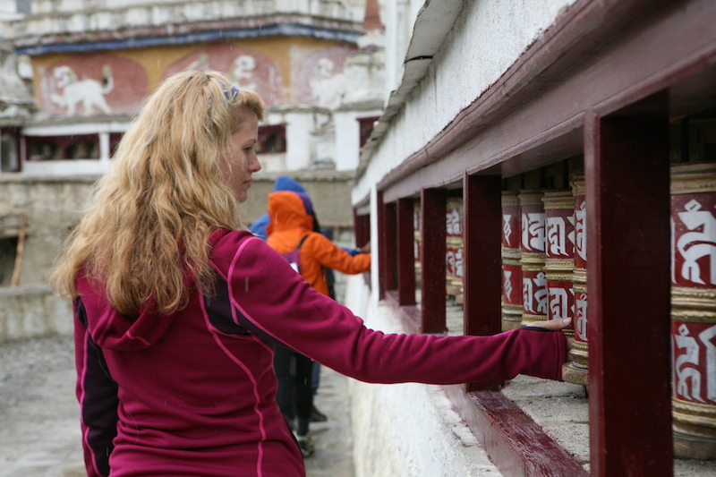After spending the morning by the lake-side, we headed back to Leh, through snaking roads, passing through some of the world’s highest motorable passes, and scenic valleys. We stopped by at the Hemis monastery on the way, where we got a glimpse into Ladakh’s rich history and religious traditions, and also a chance to interact with the monks.
Day 5
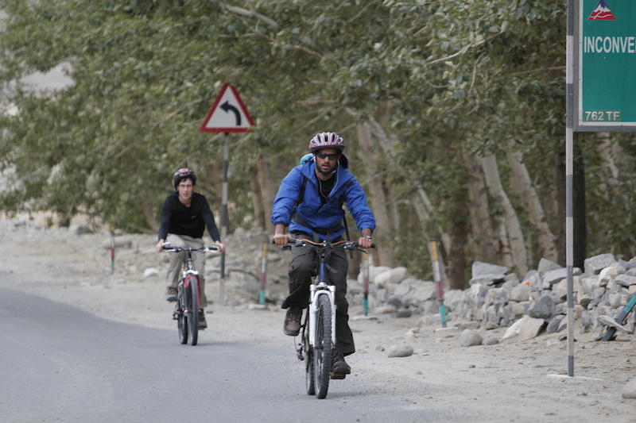Slipping into our cycling shorts, we pedaled our way through 30 kms of long winding empty roads from Leh to Nimoo, with a light drizzle and chilly winds for company. We had lunch with a local family in a hamlet nearby and spent the afternoon plucking apricots in their garden. From here, we drove to the scenic Lamayuru monastery, which would be our stop for the day.
Day 5
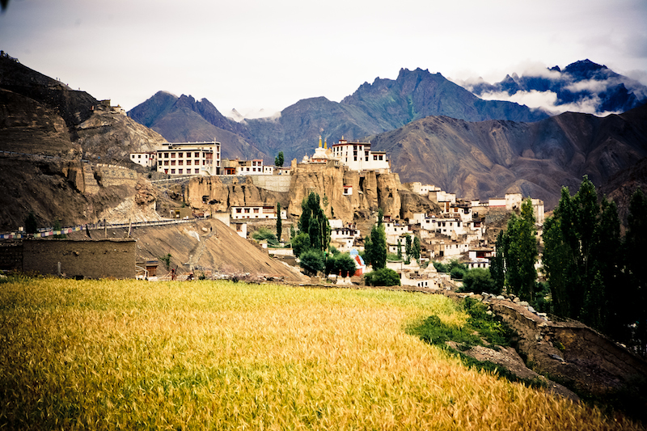Slipping into our cycling shorts, we pedaled our way through 30 kms of long winding empty roads from Leh to Nimoo, with a light drizzle and chilly winds for company. We had lunch with a local family in a hamlet nearby and spent the afternoon plucking apricots in their garden. From here, we drove to the scenic Lamayuru monastery, which would be our stop for the day.
Day 6
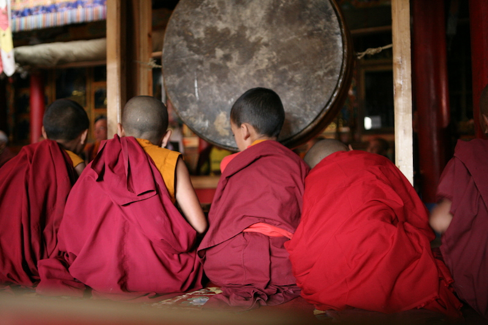Lamayuru is Ladakh’s oldest monastery and is set in a surreal surrounding called the moonland, because of its topography. We all were special invitees to the Morning Prayer in the monastery and it was an incredibly uplifting spiritual experience. After a quick walk through the town, we set off on our way, to reach our first campsite of the trek before loss of daylight.
Day 6
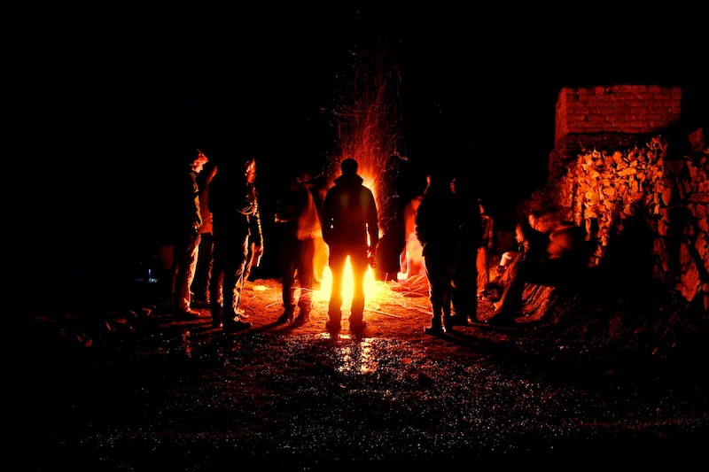Lamayuru is Ladakh’s oldest monastery and is set in a surreal surrounding called the moonland, because of its topography. We all were special invitees to the Morning Prayer in the monastery and it was an incredibly uplifting spiritual experience. After a quick walk through the town, we set off on our way, to reach our first campsite of the trek before loss of daylight.
Day 7
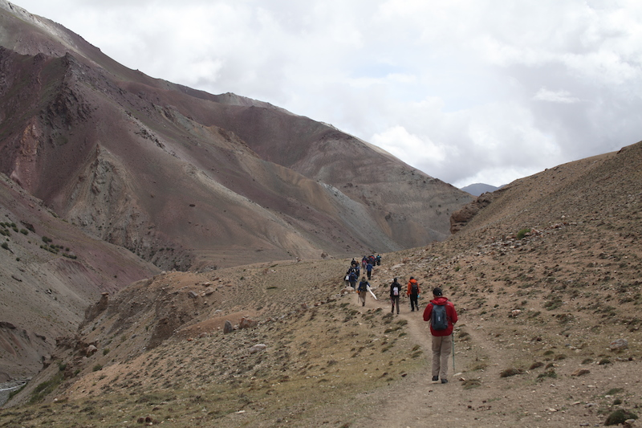Day-7 brought with it the toughest and most exciting day of trekking as we set out to scale the Kongzila Pass and reach our camping site on the other side. The day’s trek was punctuated by incessant rain, haze and chilly winds, but when we reached the top of the pass all our exhaustion and exasperation quickly transformed into great pride and joy.
Day 7
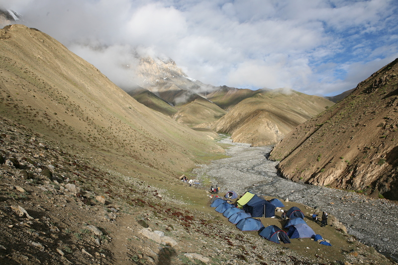Day-7 brought with it the toughest and most exciting day of trekking as we set out to scale the Kongzila Pass and reach our camping site on the other side. The day’s trek was punctuated by incessant rain, haze and chilly winds, but when we reached the top of the pass all our exhaustion and exasperation quickly transformed into great pride and joy.
Day 8
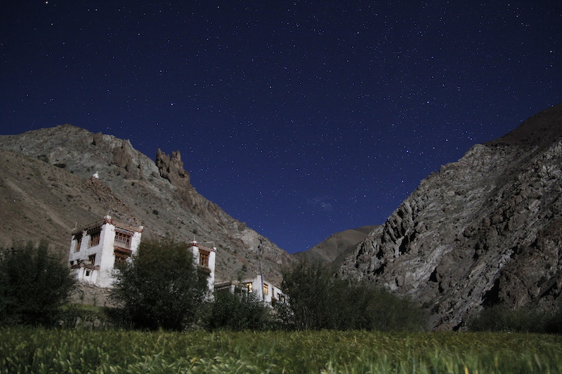Blessed with sunny weather, the next day’s trek was a lot more fun. Sure of our footing by now, we made quick progress through the rocky trails, reaching the village of Sumda Chenmo by afternoon. We spent the night there, and gifted the residents of the village, which doesn’t have any access to electricity, solar lanterns to light up their nights.
Day 8
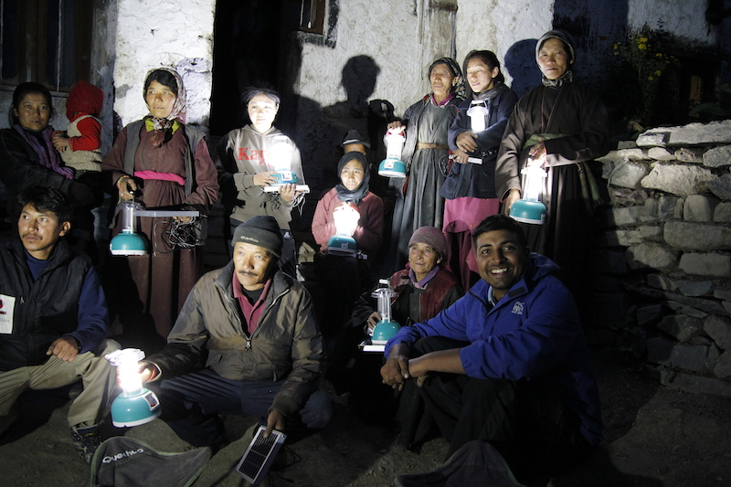Blessed with sunny weather, the next day’s trek was a lot more fun. Sure of our footing by now, we made quick progress through the rocky trails, reaching the village of Sumda Chenmo by afternoon. We spent the night there, and gifted the residents of the village, which doesn’t have any access to electricity, solar lanterns to light up their nights.
Day 9
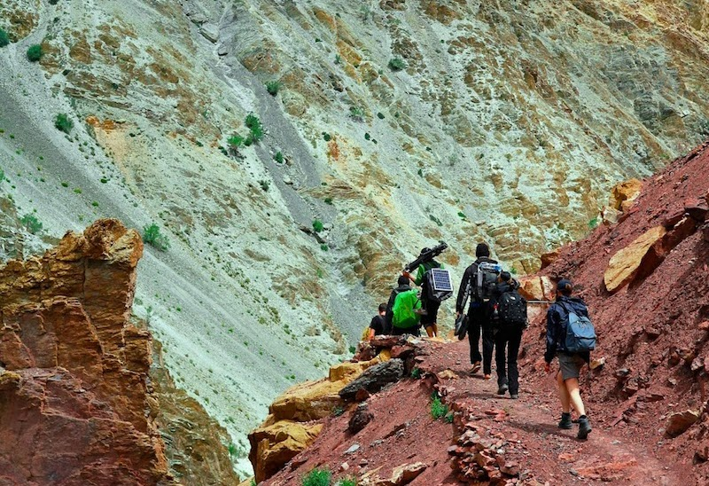After a rejuvenating stay in the warm quarters offered to us by the villagers of Sumda Chenmo, we set out on our last day of trekking, the one which I like to call the "Stream crossing day", as we made our way across atleast 2 dozen streams, small and big. We camped the night at Chilling, a stone's throw away from the Indus River.
Day 9
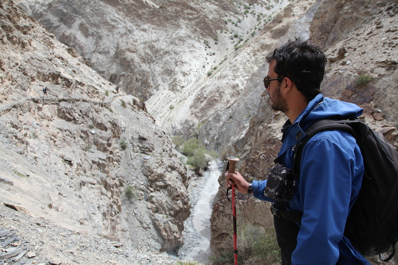After a rejuvenating stay in the warm quarters offered to us by the villagers of Sumda Chenmo, we set out on our last day of trekking, the one which I like to call the "Stream crossing day", as we made our way across atleast 2 dozen streams, small and big. We camped the night at Chilling, a stone's throw away from the Indus River.
Day 10
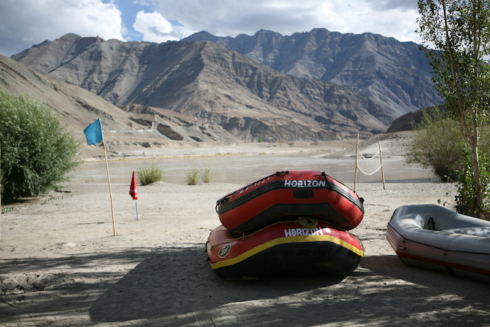The last leg of our adventure was 4 hours of white water rafting. Squeezing ourselves into wetsuits and armed with colorful oars, we broke up into 3 groups that would mount the rafts kept ready for us. Guided by experts, and fueled by our own mad adrenaline rush, we flowed along with the Zanskar River, through the rough and calm patches.
Day 10
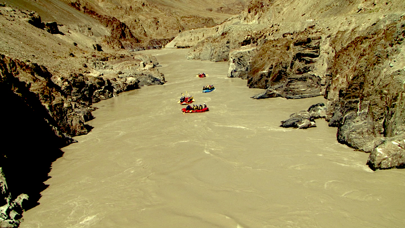The last leg of our adventure was 4 hours of white water rafting. Squeezing ourselves into wetsuits and armed with colorful oars, we broke up into 3 groups that would mount the rafts kept ready for us. Guided by experts, and fueled by our own mad adrenaline rush, we flowed along with the Zanskar River, through the rough and calm patches.
Day 11

Day 11 saw us driving to Khardungla, the pass which boasts of the highest motorable road in the world. After taking a whole lot of photos and having a quick snack with some hot tea, we headed back to Leh, to attend the city’s first TEDx event. We all then went out to the city market for some last minute souvenir shopping, while trying hard to reconcile to the fact that the amazing trip was coming to an end.
Day 11

Day 11 saw us driving to Khardungla, the pass which boasts of the highest motorable road in the world. After taking a whole lot of photos and having a quick snack with some hot tea, we headed back to Leh, to attend the city’s first TEDx event. We all then went out to the city market for some last minute souvenir shopping, while trying hard to reconcile to the fact that the amazing trip was coming to an end.
Testimonials
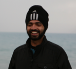
Jaideep Bansal
Manager, Proctor & Gamble
There are moments in life which make you realize that there is much more in you as an individual than what you are currently. I have always heard such stories where people said that certain experiences in life changed them. Now, through GHE, I have lived such a story. Since coming back from GHE, I am running marathons, going on cycling expeditions, volunteering for causes; in the process discovering a new side of me, which I am really enjoying.
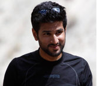
Ankur Ahuja
Associate Consultant at Bain & Company
GHE was the experience of a lifetime. To be able to meet such interesting and -rounded people from all across the globe - from the CEO of the biggest solar power company in India to people who had travelled from the North Pole to the South Pole on bamboo bikes, in a place as stunning as Ladakh, while setting up a fully functioning e-base running 100% on solar power, all in one trip - crazy! I went alone, I came back with amazing memories, great friends and buckets full of inspiring ideas. I went a sceptic, I came back a believer.
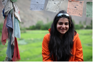
Ilesha Kharbanda
Strategy Consultant at Grant Thornton India LLP
Everything I had went through in the last few days has been all firsts - first time trekking in the Himalayas, first time camping, first time cycling through the mountains. I can’t believe I am here, having finished all this, and I am actually now ready to go on again.
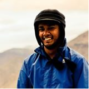